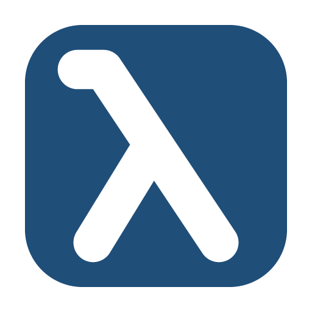

The device closes connections after 1 min without requests, so the interval with the window open is limited to 55 s. The background interval is set below.
Pick a folder inside your synced OneDrive (e.g. ~/Library/CloudStorage/OneDrive-Personal/LambdaWP). The OneDrive app uploads the files, so the app needs no sign-in. Live data still refreshes every 5 seconds. One 5-minute average is saved as a JSON file (YYYY/YYYY-MM/YYYY-MM-DD/YYYY-MM-DD-HH/YYYY-MM-DD-HH-MM/<timestamp>.json), and hourly.json is updated in the hour folder for faster history loading. Daily CSV files from older versions are still read. Simulated data goes to the simulated/ subfolder and is never loaded as history.
~/Library/CloudStorage/OneDrive-Personal/LambdaWP
YYYY/YYYY-MM/YYYY-MM-DD/YYYY-MM-DD-HH/YYYY-MM-DD-HH-MM/<timestamp>.json
hourly.json
simulated/
In the background the app reads the heat pump at the background interval (default every 5 min; with the window open it uses the normal poll interval, default 5 s). Readings are saved as 5-minute averages, with hourly averages for history. Opening the window loads history from the data folder. Use the tray icon to open the window, start/stop collecting or quit.
Module numbering follows the order in the heat pump's configuration module (lower Nr. → lower subindex). Heating circuits 11–12 need subindex 10–11, which the PDF's single-digit addressing scheme does not cover. They are read at index·1000 + subindex·100 + number and may not work.
Scans your local network for devices with an open Modbus TCP port and identifies LAMBDA heat pumps using read-only requests. Requirement: Modbus TCP is enabled on the heat pump display and it's on the same network as this computer.